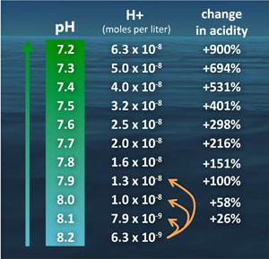

Ocean acidification
Gustav Engström
PB-workshop, 2016
What is ocean acidification?
"A reduction in the pH of the ocean over an extended period, typically decades or longer, which is caused primarily by uptake of carbon dioxide (CO2) from the atmosphere, but can also be caused by other chemical additions or subtractions from the ocean."
- IPCC
What is ocean acidification?
| - Average global surface ocean pH has fallen from a pre-industrial value of 8.21 to 8.10, corresponding to an increase in acidity of 28.8%. - Values of 7.8–7.9 are expected by 2100. - Current rates are 10 times faster than any time during the last 55 milj. years. |
 |
What is the problem?
- Many marine organisms are very sensitive to changes in ocean CO2 chemistry—especially those biota that use carbonate ions dissolved in the seawater to form protective calcium carbonate shells or skeletal structures.
- As ocean acidity increases, its capacity to absorb CO2 from the atmosphere decreases. This decreases the ocean’s role in moderating climate change.
Current state and future projections...
Since pre-industrial times, the pH of the oceans has dropped from an average of 8.2 to 8.1 today, a rate of change may be faster than at any time in the last 300 million years.
Projections of climate change estimate that by the year 2100, this number will drop further, to around 7.8 — significantly lower than any levels seen in open ocean marine communities today.

IGBP (2013) assessment of impact knowledge
- Molluscs (such as mussels, marine snails and oysters) are one of the groups most sensitive to ocean acidification. [HIGH CONFIDENCE]
- Marine snails are already dissolving. [MEDIUM CONFIDENCE]
- If CO2 emissions continue on the current trajectory, coral reef erosion is likely to outpace reef building sometime this century [HIGH CONFIDENCE]
- Some sea grass and phytoplankton species may benefit from ocean acidification [HIGH CONFIDENCE]
- The combination of ocean acidification and increased temperatures negatively affects many organisms [HIGH CONFIDENCE]
Planetary boundary...
The saturation state of aragonite ($\Omega$), is a common measurement of ocean acidification. Currently, the saturation state of aragonite is approximately equal to 84% of the preindustrial level.
The planetary boundary is set to 80% of the preindustrial level in both the 2009 and the 2015 paper.
Policies...
Ocean acidification can only be mitigated by reducing atmospheric CO2.